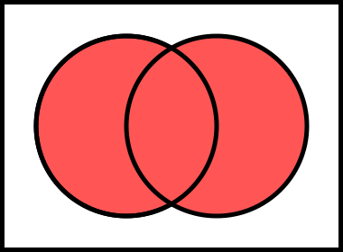

Little Schemer 1

Why The Little Schemer?
The Little Schemer (TLS) written by computer science professors Daniel P. Friedman and Daniel P. Friedman was a revolutionary book when it came out in its first edition as The Little Lisper based on the programming language Lisp in 1987. Subsequent editions switched to Lisp’s younger sister language Scheme. It was so unique because it followed a “Socratic” dialog style of question and answer in left and right columns throughout the book. Below is from the very first page of the first chapter 1 ŒíŒπŒ≥ Œ£ŒæŒ∑ŒµŒºŒµœÅ: Big Schemer; ŒõŒπœÑœÑŒªŒµ Œ£ŒæŒ∑ŒµŒºŒµœÅ: Little Schemer in Greek letters.
| Βιγ Σξηεμερ | Λιττλε Σξηεμερ |
|---|---|
| Is it true that this is an atom? | Yes, because atom1 is a string of characters beginning with the letter a. |
atom1 |
|
| Is it true that this is an atom? | Yes, because turkey is a string of characters beginning with a letter. |
turkey |
|
| Is it true that this is an atom? | Yes, because 1492 is a string of digits. |
1492 |
|
| Is it true that this is an atom? | Yes, because *abc$ is a string of characters beginning with a letter or special character other than a left ( or right ) parenthesis. |
*abc$ |
|
| Is it true that this is a list? | Yes, because (atom) is an atom enclosed by parentheses. |
(atom) |
|
| Is it true that this is a list? | Yes, because it is a collection of atoms [separated by spaces and] enclosed by parentheses. |
(atom turkey or) |
|
…or as we’ll present it
Βιγ Σξηεμερ: Is it true
that atom1 is an atom?
Λιττλε Σξηεμερ: Yes,
because atom1 is a string of characters beginning with the letter
a.
This Socratic dialog explores in its chatty conversation style a sort of loose mathematical formalism 2 Go here to see the Wikipedia discussion about mathematic formalism—although it’s a bit formal… where you the reader will experience a growing mental picture of theory and syntax as the conversation continues and the pages turn. Instead of making direct statements about programming language syntax rules, we get a stream of questions and replies that will gradually form the desired world in our own minds. We’re if effect backing into Scheme programming and its underlying philosophy—and underlying is quite a bit of computer science.
Some things, however, are directly stated. Before the first chapter entitled 1. Toys, even before the title page, there are listed (jokingly named?) The Ten Commandments, followed by The Five Rules. Again, this is a nod to, a play on the mathematical formalism of an axiomatic system. But what do we mean by an axiomatic system and why are they important?
The multi-volume set Euclid’s Elements (EE) from ca. 300 BC Greece is
generally accepted as being the first example of mathematics built on
axioms and proofs. EE has been in the Western world’s math curricula
ever since. It was once a staple of high school math … though often
dreaded, as it was the student’s first exposure to the strange idea
of proving math instead of just doing math. Proving something in
math requires a deep grasp of a topic, which is completely different
from the typical style of “when you see this, do this”
conditioning. Starting with Euclidean Geometry, the student is asked
to see a geometric situation3
For example the (in)famous pons asinorum in Euclid’s
Elements

where it is proven that indeed the angles opposite the equal sides
of an isosceles triangle are themselves equal.
and understand why something about
it is necessarily (proven to be) true. The proof of, e.g., the pons
asinorum is a step-by-step establishing of facts based on Euclid’s
Postulates and Notions. Again, this was the beginning of modern
mathematics where a set of axioms could be called on to build
theorems, i.e., additional true assumptions. Axioms go by many
names, e.g., basic truths, givens, primitives. Here are Euclid’s five
postulates
- P1
- A straight line may be drawn between any two points.
- P2
- Any terminated straight line may be extended indefinitely.
- P3
- A circle may be drawn with any given point as center and any given radius.
- P4
- All right angles are equal.
- P5
- Through a given point \(P\) not on a line \(L\), there is one and only one line in the plane of \(P\) and \(L\) which does not meet \(L\).
The last postulate is a more modern rewording of the original meaning truly parallel lines may exist that never cross. To these first five, Euclid added another five basic truths, his Common Notions
- N1
- Things which are equal to the same thing are also equal to each other.
- N2
- If equals are added to equals, the wholes are equal.
- N3
- If equals are subtracted from equals, the remainders are equal.
- N4
- Things which coincide with one another are equal to one another.
- N5
- The whole is greater than the part.
With these ten axiomatic statements begins much geometry, logic, number and set theory. That is to say, great amounts of implication, “if this then that” can be derived from these ten accepted givens.4 In mathematical logic the idea of implication is very fundamental. Something implies something else; because \(A\), that means \(B\) as well. Implication goes by many names: material conditional, modus ponens, logical consequence. We first see implication in programming with the basic if-then-else conditional. For example, the last notion, N5, seems to say something almost silly and trivial. But as this treatment explains, N5 is introducing in odd wording the basic concept of one thing being larger than another, i.e., \(A>B\). Here’s David E. Joyce’s, professor of mathematics at Clark University, explanation
To say one magnitude \(B\) is a part of another \(A\) could be taken as saying that \(A\) is the sum of \(B\) and \(C\) for some third magnitude \(C\), the remainder. Symbolically, \(A > B\) means that there is some \(C\) such that \(A = B + C\).
Again, to the novice this may look like nit-picking, but real math comes from having these basic foundational givens—upon which new, useful math is solidly, logically built. Higher math5 Higher math in the U.S. typically means those college math courses pursued in the junior and senior year of a Bachelors math degree, i.e., those courses after Calculus, Differential Equations, and Linear Algebra. is the realm of axiomatic math where proofs of theorems are the staple. Higher math is where the student becomes a real mathematician who looks under the hood and learns what makes things tick.
Let’s consider a more serious-looking set of axioms, again, taken from course material by Professor Joyce, then a proof of a theorem based, relying on these axioms6 These axioms are taken from Linear Algebra.
- Vector addition is commutative: \(v + w = w + v\).
- Vector addition is associative: \((u + v) + w = u + (v + w)\).
- There is a vector, denoted \(0\) such that \(v + 0 = v = 0 + v\).
- For each \(v\), there is another vector \(−v\) such that \(v + (−v) = 0\).
- Scalar multiplication distributes over vector addition: \(c(v + w) = cv + cw\).
- Scalar multiplication distributes over real addition: \((c + d)v = cv + dv\)
- Multiplication and scalar multiplication associate: \(c(dv) = (cd)v\).
- The number \(1\) acts as identity for scalar multiplication: \(1v = v\).
And now we’ll prove a very basic theorem relying on these axiom truths
Theorem: \(0v = 0\)
…or zero times a vector \(v\) is zero.
⌜
Proof: Since \(0 + 0
= 0\), therefore we can say \((0 + 0)v = 0v\). By axiom 6, that implies
\(0v + 0v = 0v\). If we could subtract \(0v\) from each side, we’d be
done, but subtraction isn’t yet defined. Still, we can add the
negation of \(0v\) to each side which should accomplish about the same
thing. Thus,
Next, we can associate the parentheses differently by axiom 2 to get
\begin{align*} 0v + (0v + (−0v)) = 0v + (−0v). \end{align*}
That equation simplifies by axiom 4 to \(0v + 0 = 0\), and by axiom
3, that further simplifies to \(0v = 0\) which is what was to be
proved. Q.E.D.7
… quod erat demonstrandum, meaning “that which was to be
demonstrated”.
⌟
Got it? No worries (yet) if you didn’t. The point is to understand that this so-call higher math thing wants to be built exclusively on axioms. But yes, this is a strange world for the beginner so used to the usual “get stuff calculated” math. In algebra we never needed to show that an entity times zero is zero. So yes, here we have a thorough proof of something that we normally would have taken for granted. But again, this is the world of higher math.8 Go ahead and take a “math holiday” by touring this page by Professor Joyce. He speaks from a quasi-set theory standpoint, but remember, Euclid was talking strictly about geometric shapes. Set theory had not been invented yet…
Axiomatic Scheme
And now we will list out the TLS’s version of axiomatic givens starting with The Ten Commandments
- First Commandment: When recurring on a list of atoms,
lat, ask two questions about it(null? lat)andelse; when recurring on a number,n, ask two questions about it:(zero? n)andelse; when recurring on a list of S-expressions,l, ask three question about it:(null? l),(atom? ( car l)), andelse. - Second Commandment: Use
consto build lists. - Third Commandment: When building a list, describe the first typical
element, and then
consit onto the natural recursion. - Fourth Commandment: Always change at least one argument while
recurring. When recurring on a list of atoms,
lat, use(cdr lat). When recurring on a number,n, use(sub1 n). And when recurring on a list of S-expressions,l, use(car l)and(cdr l)if neither(null? l)nor(atom? (car l))are true. [One argument] must be changed to be closer to termination. The changing argument must be tested in the termination condition: When usingcdr, test termination withnull?and when usingsub1, test termination withzero?. - Fifth Commandment: When building a value with \(+\), always use \(0\) for the value of the terminating line, for adding \(0\) does not change the value of an addition.
- Sixth Commandment: Simplify only after the function is correct.
- Seventh Commandment: Recur on the subparts that are of the same nature: on the sublists of a list; on the subexpressions of an arithmetic expression.
- Eighth Commandment: Use help functions to abstract from representations.
- Ninth Commandment: Abstract common patterns with a new function.
- Tenth Commandment: Build functions to collect more than one value at a time.
But wait there’s more. Next are the The Five Rules
- The Law of
car: The primitivecaris defined only for nonempty lists. - The Law of
cdr: The primitivecdris defined only for nonempty lists. Thecdrof any nonempty list is always another list. - The Law of
cons: The primitiveconstakes two arguments. The second argument toconsmust be a list. The result is a list. - The Law of
null?: The primitivenull?is defined only for lists. - The Law of
eq?: The primitiveeq?takes two arguments. Each must be a non-numeric atom.
Not many beginners can take these fifteen axioms and know exactly how to write a Scheme program.9 Precisely none of us since key things are still missing. But then if you’ve read and understood a textbook such as Lists, Decisions and Graphs… by Edward Bender and S. Gill Williamson, you might catch on that these axioms are attempting is to create some sort of omnibus10 …containing or including many items. list processing machinery. In fact Scheme’s predecessor, Lisp, is an acronym for “list processing,” because this is essentially what Lisp and Scheme do, i.e., they do computing tasks with lists. Really?! A whole working programming language is just a bunch of lists? How can that be? Read on.
What then is a list? We all know in the everyday sense what a list is. A grocery list is a good example
- eggs
- milk
- flour
- potatoes
- butter
But we have a problem—at least in the math world. That’s because in mathematics (again, higher math) there are also sets. So what is the difference between a list and a set? To the layman they might seem interchangeable. Set theory is the fundamental starting point of higher math, and so many set theory books begin with the statement
A set is collections of things.
Which is kind of what a list is too. But to CS and math people they are two different entities. Our grocery list is not technically a list because, in the CS/math world at least, a list is defined as having a specific order. But then our grocery list could be in any order, doesn’t really matter.
Order matters. Let’s think of a string of letters like you’re reading right now. In real life a string of alphanumeric characters is definitely like a list because the order of the individual alphanumeric characters (and spaces in between) —is everything. You can’t mix them up. We call strings of letters and spaces sentences … where all the sentences in English are made up of differing combinations of the twenty-six letters (times two if we consider upper- and lower-case), the ten numerals, punctuation, and the space character. So again, that “grocery list” is really a set of groceries…
…but then we might not call it a set either because sets allow duplicates. Really? Yes and no. …although the cardinality of a set, i.e., the number of actual, true member elements, only counts the unique elements, not duplicates.11 In set theory we indicate the cardinality of a set \(A\) by surrounding it with vertical pipes: \(|\,A\,|\) This is similar to the idea of a number’s absolute value which uses the same symbol.
⌜
ùñüùï≠: The set \(A = \{1,1,1,2,2\}\) is identical to \(B = \{1,
2\}\), i.e., they have the same cardinality, or \(|\,A\,| = |\,B\,| =
2\).12
ùñüùï≠ is German for zum Beispiel or for example.
⌟
This can be explained in a few ways. The simplest is to say the members, the elements of a set belong to that set. So for example, if I belong to a club, it doesn’t make sense to have me belong-belong or belong twice to the club. But then set theory is a very fundamental thing in higher math and is thus very precisely defined based on axioms. For example, set theory has the Axiom of Extensionality which says two sets are equal if they both have the same members. In our example \(A\) and \(B\) do indeed have the same members, namely, \(1\) and \(2\) —and it doesn’t matter that \(A\) repeats these members.
⌜
ùñüùï≠: Given the set \(A = \{\text{good, so-so, bad}\}\) and a list (as
a named Scheme list):
(define week3 '(good bad bad so-so so-so so-so good))
the set \(A\) signifies the possible moods a person might be in; while
week3 is the name we’ve defined for a list containing this daily
mood data we collected each day of week 3.13
Notice how we’ve made a list containing our list in order to
define our list. More on how everything in Scheme is a list soon…
⌟
So the order of set \(A\) doesn’t matter, but the order of the list
defined as week3 is important because we don’t want to mix up how we
felt on what day, Sunday, Monday, etc., good, bad, or so-so. Also, it
makes perfect sense for a list to have “repeats” since we’re
evaluating many days in succession, and each day can be one of three
choices. But then notice one more thing about a set: When we built the
list week3 we had to choose for each day (each successive position
in the list representing each day of the week) good or bad or
so-so. Remember Venn diagrams? For example, an or-relationship was a
union of the circles.14
A Venn diagram

of two sets or-ed, union-ed together. The lens-shaped center
represents the “overlap,” i.e., what the two circles have in common.
Now, let’s go beyond the colored Venn diagram circles and take a more formal look at what a union is. Let’s make a formal definition of a union:
The union of two sets \(A\) and \(B\) (denoted by \(A \cup B\)) is the set of elements which are in \(A\), in \(B\), or in both \(A\) and \(B\). 15 Could we have said, …in \(A\) and in \(B\) and in both \(A\) and \(B\)? Better not. More on why later.
This definition can be expanded to include more than just two sets. For example, three common alphabets, the Greek, Latin, and Cyrillic
\begin{align*} G &= \{Œë, Œí, Œì, Œî, Œï, Œñ, Œó, Œò, Œô, Œö, Œõ, Œú, Œù, Œû, Œü, Œ†, Œ°, Œ£, Œ§, Œ•, Œ¶, Œß, Œ®, Œ©\} \\ L &= \{A, B, C, D, E, F, G, H, I, J, K, L, M, N, O, P, Q, R, S, T, U, V, W, X, Y, Z\} \\ C &= \{A, Б, В, Г, Д, E, Ё, Ж, З, И, Й, K, Л, М, Н, О, П, Р, С, Т, У, Ф, Х, Ц, Ч, Ш, Ъ, \\ & Ы, Ь, Э, Ю, Я\} \end{align*}Now, let’s make a on big set \(A\) out of the individual sets \(G\), \(L\), and \(C\)
\begin{align*} A &= \{ Α, Β, Γ, Δ, Ε, Ζ, Η, Θ, Ι, Κ, Λ, Μ, Ν, Ξ, Ο, Π, Ρ, Σ, Τ, Υ, \\ & Φ, Χ, Ψ, Ω, A, B, C, D, E, F, G, H, I, J, K, L, M, N, O, P, Q, R, \\ & S, T, U, V, W, X, Y, Z, A, Б, В, Г, Д, E, Ё, Ж, З, И, Й, K, Л, М, Н, \\ & О, П, Р, С, Т, У, Ф, Х, Ц, Ч, Ш, Ъ, Ы, Ь, Э, Ю, Я\} \end{align*}Below we see a Venn diagram for \(A\), i.e., circles in which three sets, alphabets, are contained. We can see how the circle edge lines show the intersection, i.e., what any two alphabets share, and in the very center what they all share

Of course for space purposes not all the letters could be fit into the diagram above, but we can see how the Venn diagram with its overlapping circles trick is beating duplicates. Yes, visually this is happening, but is there a formal explanation?
First, let’s look at a formal definition of union in so-called set-builder notation
\begin{align} A \cup B = \{x : x \in A \lor x \in B \} \end{align}This expression says the union of \(A\) and \(B\) equals the set of \(x\)’s such that an \(x\) is an element coming from16 The symbol \(\in\) means “in” or “member of.” \(A\) or \(x\) is an element of \(B\).17 \(\lor\) is the symbol for logical or, aka logical disjunction. Take a crack at the Wikipedia article. But wait, or doesn’t quite sound right in English if we mean to union-ize two or more things, does it? To bring two or more sets together as one—their unique and shared element alike—don’t we mean to say, e.g., the union of \(A\) and \(B\) takes all the elements from both \(A\) and \(B\)? Yes, but set theory prefers to look at, e.g., the Venn diagram of the alphabets (Figure 2 above) and say, A letter belongs to the union of alphabets if it is from the Greek or from the Latin or from the Cyrillic alphabets. Again, we have the idea of sets and belonging to sets.
Now, look at that bulging middle triangle region of Figure 2 containing the letters all three alphabets have in common. This is the intersection of alphabet sets \(G\), \(L\), and \(C\). In this case we would say A letter belongs to the center triangle (the intersection) if it belongs to \(G\) and it belongs to \(L\) and it belongs to \(C\). That is to say the letter has to be found in all three alphabets. This is more precise, something upon which higher math always insists.

And now with one final piece of the puzzle we can put to rest this whole duplicates with sets issue. Let’s explore another logic concept that we actually encounter every day. In the modern world we’re constantly turning things on and off, e.g., a light switch, a single on-off button that “toggle” back and forth to on or off with each push or flip. But occasionally we see, e.g., two buttons---one for on, one for off. In the image to the right we have two buttons doing on and off instead of one. In such a case pushing the green on button just one initial time turns the device on and any additional pushing is disregarded. This is the same for the red off button. Push once for off—and any further pushes mean nothing. This is basically the formal logical version of “you don’t have to repeat, I heard you the first time.” This logic phenomenon has an official name: idempotence, and crops up in many situations. For our situation simply imagine making a Venn diagram of sets \(S_1 = \{5\}\) and \(S_2 = \{5\}\), i.e., two different sets containing the same single element. Would it not just be one single circle containing the element \(5\)? And if we added another set \(S_3 = \{5\}\), we would have
\begin{align*} S_1 \cup S_2 \cup S_3 = \{5\} \end{align*}
Now for a bit of abstraction. Consider a binary operator, i.e.,
anything that takes two objects and does something with them to
produce something new. For example, \(1 + 1\) makes \(1\) or \(3 \cdot 5\) for
\(3\) times \(5\) makes \(15\). Let’s then use the abstract symbol \(\oplus\) or
any binary operator. Now we can establish a formal definition of
idempotence
The binary operation \(\oplus\) is said to be idempotent if
\begin{align*} x \oplus x = x \,\,\text{for all}\,\, x \in S \end{align*}